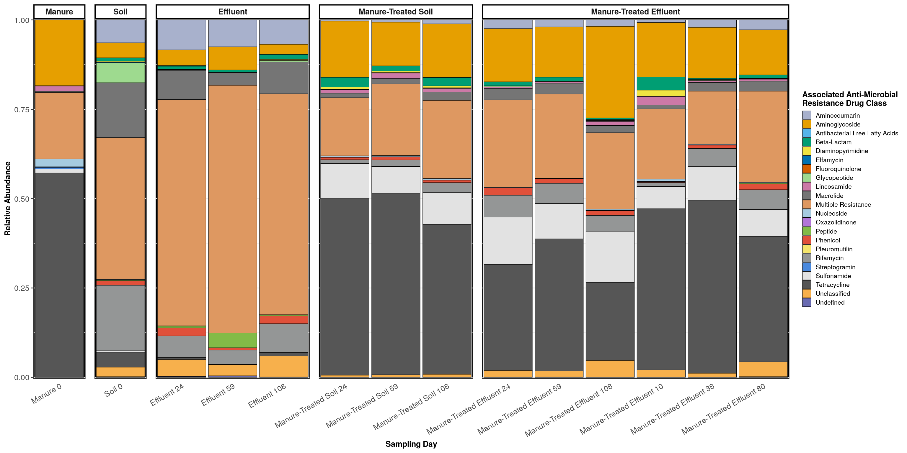
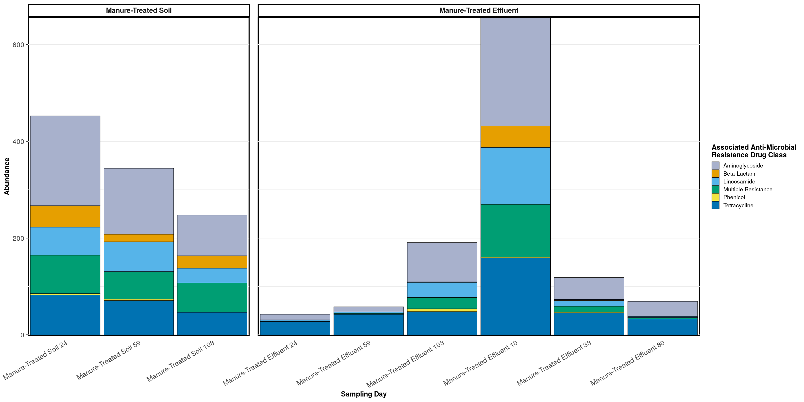
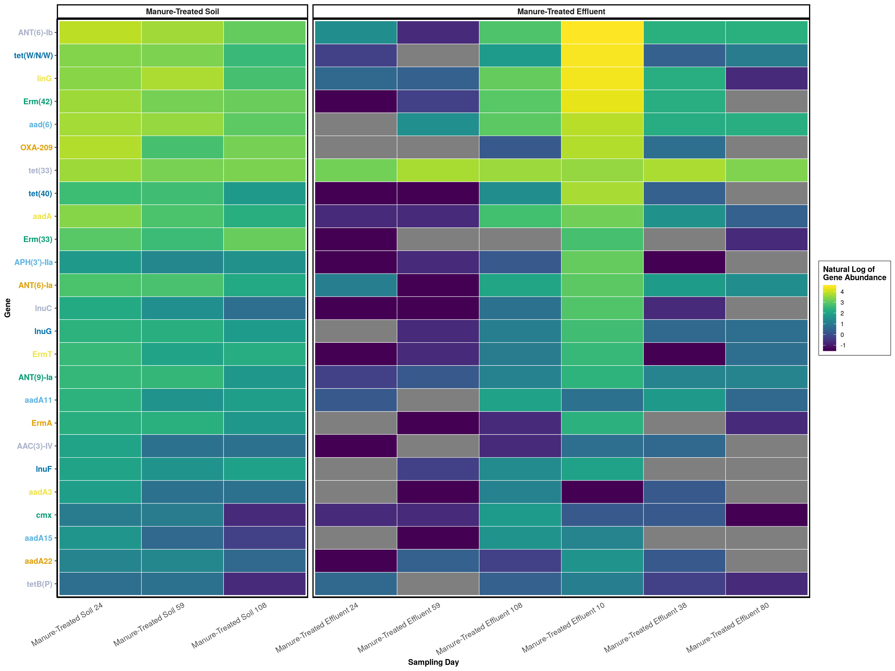
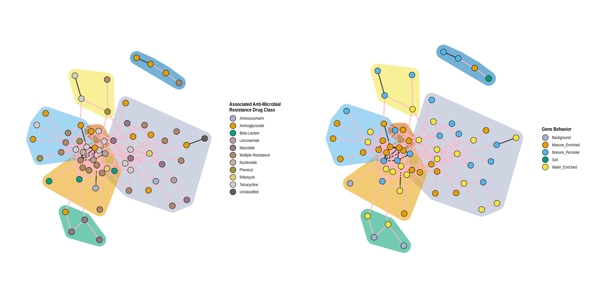
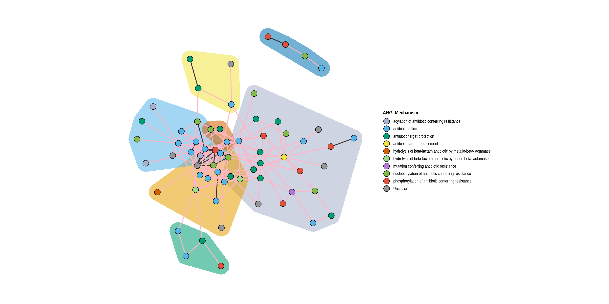

Project Repository with Data
Investigating the dispersal of antibiotic resistance associated genes from manure application to soil and drainage waters in simulated agricultural farmland systems
#Required Pacakges
devtools::install_github('schuyler-smith/phylosmith')
devtools::install_github('schuyler-smith/schuylR')library(data.table)
library(phyloseq)
library(phylosmith)
library(ggplot2)
library(vegan)
library(schuylR)
library(gridExtra)#Data Setup
phylo_object <- readRDS("../data/soil_column_ARGs.RDS"); phylo_object## phyloseq-class experiment-level object
## otu_table() OTU Table: [ 320 taxa and 56 samples ]
## sample_data() Sample Data: [ 56 samples by 8 sample variables ]
## tax_table() Taxonomy Table: [ 320 taxa by 3 taxonomic ranks ]phylo_object <- phylosmith::merge_treatments(phylo_object, 'Matrix', 'Treatment')
treatments <- 'Matrix_Treatment'
levels(phylo_object@sam_data$Matrix_Treatment) <- c('Effluent', 'Manure', 'Soil', 'Manure-Treated Effluent', NA, 'Manure-Treated Soil')
phylo_object <- phylosmith::set_treatment_levels(phylo_object, treatment = 'Matrix_Treatment',
order = c('Manure', 'Soil', 'Effluent', 'Manure-Treated Soil', 'Manure-Treated Effluent'))
metadata <- fread('../data/metadata.tsv')
gsub('SC.*_A', 'A', metadata$`Sample ID`) == sample_names(phylo_object)## [1] TRUE TRUE TRUE TRUE TRUE TRUE TRUE TRUE TRUE TRUE TRUE TRUE TRUE TRUE
## [15] TRUE TRUE TRUE TRUE TRUE TRUE TRUE TRUE TRUE TRUE TRUE TRUE TRUE TRUE
## [29] TRUE TRUE TRUE TRUE TRUE TRUE TRUE TRUE TRUE TRUE TRUE TRUE TRUE TRUE
## [43] TRUE TRUE TRUE TRUE TRUE TRUE TRUE TRUE TRUE TRUE TRUE TRUE TRUE TRUEsample_names(phylo_object) <- paste(sapply(strsplit(metadata$`Sample ID`, '_'), `[`, 1), metadata$Day, sep = '_Day_')
phylo_object## phyloseq-class experiment-level object
## otu_table() OTU Table: [ 320 taxa and 56 samples ]
## sample_data() Sample Data: [ 56 samples by 9 sample variables ]
## tax_table() Taxonomy Table: [ 320 taxa by 3 taxonomic ranks ]#Manure Resistome vs Soil Resistome
manure## phyloseq-class experiment-level object
## otu_table() OTU Table: [ 173 taxa and 4 samples ]
## sample_data() Sample Data: [ 4 samples by 9 sample variables ]
## tax_table() Taxonomy Table: [ 173 taxa by 5 taxonomic ranks ]soil## phyloseq-class experiment-level object
## otu_table() OTU Table: [ 176 taxa and 16 samples ]
## sample_data() Sample Data: [ 16 samples by 9 sample variables ]
## tax_table() Taxonomy Table: [ 176 taxa by 5 taxonomic ranks ]##Unique Genes for Each Resistome
unique_control_genes <- unique_taxa(phylo_object, treatments, c('Manure', 'Soil', 'Effluent')); sapply(unique_control_genes, length)## Manure Soil Effluent
## 88 8 54data.frame(taxa_proportions(manure, 'ARG_Class'), row.names = 1)## Proportion
## Tetracycline 0.571
## Multiple Resistance 0.186
## Aminoglycoside 0.184
## Nucleoside 0.022
## Lincosamide 0.015
## Sulfonamide 0.011
## Streptogramin 0.005
## Macrolide 0.003
## Phenicol 0.001
## Unclassified 0.001
## Rifamycin 0.001
## Diaminopyrimidine 0.000
## Beta-Lactam 0.000
## Aminocoumarin 0.000
## Glycopeptide 0.000
## Fluoroquinolone 0.000
## Oxazolidinone 0.000
## Pleuromutilin 0.000
## Peptide 0.000
## Undefined 0.000data.frame(taxa_proportions(soil, 'ARG_Class'), row.names = 1)## Proportion
## Multiple Resistance 0.653
## Aminocoumarin 0.076
## Aminoglycoside 0.053
## Peptide 0.025
## Rifamycin 0.057
## Macrolide 0.061
## Unclassified 0.039
## Phenicol 0.013
## Beta-Lactam 0.008
## Undefined 0.003
## Glycopeptide 0.004
## Tetracycline 0.005
## Antibacterial Free Fatty Acids 0.001
## Nucleoside 0.000
## Fluoroquinolone 0.000
## Sulfonamide 0.000
## Diaminopyrimidine 0.000
## Lincosamide 0.000
## Elfamycin 0.000
## Pleuromutilin 0.000
## Streptogramin 0.000sum(taxa_sums(taxa_filter(phylo_object, treatment = treatments, subset = 'Manure')))/sum(taxa_sums(taxa_filter(phylo_object, treatment = treatments, subset = 'Soil')))## [1] 290.9389#Phylogeny Profiles
g <- phylogeny_profile(conglomerate_samples(phylo_object, treatment = treatments, merge_on = 'Day'), 'ARG_Class', treatments, relative_abundance = TRUE) +
labs(fill = 'Associated Anti-Microbial\nResistance Drug Class', x = 'Sampling Day') +
guides(fill=guide_legend(ncol=1))
g
#Ordination
#Statistical Tests
wilcox.test(as(manure@otu_table, 'matrix'), as(soil@otu_table, 'matrix'))##
## Wilcoxon rank sum test with continuity correction
##
## data: as(manure@otu_table, "matrix") and as(soil@otu_table, "matrix")
## W = 1497887, p-value < 2.2e-16
## alternative hypothesis: true location shift is not equal to 0wilcox.test(as(taxa_filter(phylo_object, treatments, subset = 'Manure')@otu_table, 'matrix'),
as(taxa_filter(phylo_object, treatments, subset = 'Manure-Treated Soil')@otu_table, 'matrix'))##
## Wilcoxon rank sum test with continuity correction
##
## data: as(taxa_filter(phylo_object, treatments, subset = "Manure")@otu_table, and as(taxa_filter(phylo_object, treatments, subset = "Manure-Treated Soil")@otu_table, "matrix") and "matrix")
## W = 1395243, p-value < 2.2e-16
## alternative hypothesis: true location shift is not equal to 0wilcox.test(as(taxa_filter(phylo_object, treatments, subset = 'Soil')@otu_table, 'matrix'),
as(taxa_filter(phylo_object, treatments, subset = 'Manure-Treated Soil')@otu_table, 'matrix'))##
## Wilcoxon rank sum test with continuity correction
##
## data: as(taxa_filter(phylo_object, treatments, subset = "Soil")@otu_table, and as(taxa_filter(phylo_object, treatments, subset = "Manure-Treated Soil")@otu_table, "matrix") and "matrix")
## W = 519556, p-value = 3.53e-07
## alternative hypothesis: true location shift is not equal to 0wilcox.test(as(taxa_filter(phylo_object, treatments, subset = 'Soil')@otu_table, 'matrix'),
as(taxa_filter(phylo_object, treatments, subset = 'Manure-Treated Effluent')@otu_table, 'matrix'))##
## Wilcoxon rank sum test with continuity correction
##
## data: as(taxa_filter(phylo_object, treatments, subset = "Soil")@otu_table, and as(taxa_filter(phylo_object, treatments, subset = "Manure-Treated Effluent")@otu_table, "matrix") and "matrix")
## W = 1384318, p-value = 0.9732
## alternative hypothesis: true location shift is not equal to 0wilcox.test(as(taxa_filter(phylo_object, treatments, subset = 'Effluent')@otu_table, 'matrix'),
as(taxa_filter(phylo_object, treatments, subset = 'Manure-Treated Effluent')@otu_table, 'matrix'))##
## Wilcoxon rank sum test with continuity correction
##
## data: as(taxa_filter(phylo_object, treatments, subset = "Effluent")@otu_table, and as(taxa_filter(phylo_object, treatments, subset = "Manure-Treated Effluent")@otu_table, "matrix") and "matrix")
## W = 6118106, p-value = 0.1742
## alternative hypothesis: true location shift is not equal to 0dat <- taxa_filter(phylo_object, treatment = treatments, subset = 'Manure')
adonis(t(dat@otu_table) ~ Sample, data = as(dat@sam_data, 'data.frame'), permutations=1000, method = "bray")## 'nperm' >= set of all permutations: complete enumeration.## Set of permutations < 'minperm'. Generating entire set.##
## Call:
## adonis(formula = t(dat@otu_table) ~ Sample, data = as(dat@sam_data, "data.frame"), permutations = 1000, method = "bray")
##
## Permutation: free
## Number of permutations: 23
##
## Terms added sequentially (first to last)
##
## Df SumsOfSqs MeanSqs F.Model R2 Pr(>F)
## Sample 3 0.010968 0 0 1 1
## Residuals 0 0.000000 Inf 0
## Total 3 0.010968 1dat <- taxa_filter(phylo_object, treatment = treatments, subset = 'Soil')
adonis(t(dat@otu_table) ~ Sample, data = as(dat@sam_data, 'data.frame'), permutations=1000, method = "bray")## 'nperm' >= set of all permutations: complete enumeration.
## Set of permutations < 'minperm'. Generating entire set.##
## Call:
## adonis(formula = t(dat@otu_table) ~ Sample, data = as(dat@sam_data, "data.frame"), permutations = 1000, method = "bray")
##
## Permutation: free
## Number of permutations: 23
##
## Terms added sequentially (first to last)
##
## Df SumsOfSqs MeanSqs F.Model R2 Pr(>F)
## Sample 3 0.12541 0 0 1 1
## Residuals 0 0.00000 Inf 0
## Total 3 0.12541 1dat <- taxa_filter(phylo_object, treatment = treatments, subset = 'Effluent')
adonis(t(dat@otu_table) ~ Day * Sample, data = as(dat@sam_data, 'data.frame'), permutations=1000, method = "bray")##
## Call:
## adonis(formula = t(dat@otu_table) ~ Day * Sample, data = as(dat@sam_data, "data.frame"), permutations = 1000, method = "bray")
##
## Permutation: free
## Number of permutations: 1000
##
## Terms added sequentially (first to last)
##
## Df SumsOfSqs MeanSqs F.Model R2 Pr(>F)
## Day 2 0.70022 0 0 0.51473 1
## Sample 9 0.66014 0 0 0.48527 1
## Residuals 0 0.00000 Inf 0.00000
## Total 11 1.36036 1.00000dat <- taxa_filter(phylo_object, treatment = treatments, subset = 'Manure-Treated Soil')
adonis(t(dat@otu_table) ~ Day * Sample, data = as(dat@sam_data, 'data.frame'), permutations=1000, method = "bray")##
## Call:
## adonis(formula = t(dat@otu_table) ~ Day * Sample, data = as(dat@sam_data, "data.frame"), permutations = 1000, method = "bray")
##
## Permutation: free
## Number of permutations: 1000
##
## Terms added sequentially (first to last)
##
## Df SumsOfSqs MeanSqs F.Model R2 Pr(>F)
## Day 2 0.39011 0 0 0.15942 1
## Sample 9 2.05687 0 0 0.84058 1
## Residuals 0 0.00000 Inf 0.00000
## Total 11 2.44698 1.00000dat <- taxa_filter(phylo_object, treatment = treatments, subset = 'Manure-Treated Effluent')
adonis(t(dat@otu_table) ~ Day * Sample, data = as(dat@sam_data, 'data.frame'), permutations=1000, method = "bray")##
## Call:
## adonis(formula = t(dat@otu_table) ~ Day * Sample, data = as(dat@sam_data, "data.frame"), permutations = 1000, method = "bray")
##
## Permutation: free
## Number of permutations: 1000
##
## Terms added sequentially (first to last)
##
## Df SumsOfSqs MeanSqs F.Model R2 Pr(>F)
## Day 5 2.4338 0 0 0.69899 1
## Sample 18 1.0481 0 0 0.30101 1
## Residuals 0 0.0000 -Inf 0.00000
## Total 23 3.4818 1.00000#Identifying Persisting Genes from Manure
sum(unique_control_genes$Manure %in% taxa_names(taxa_filter(phylo_object, 'Treatment', 'Manure')))## [1] 75sum(unique_control_genes$Manure %in% taxa_names(taxa_filter(phylo_object, treatments, 'Manure-Treated Effluent')))## [1] 69manure_persisters_genes <- unique_control_genes$Manure[unique_control_genes$Manure %in% taxa_names(taxa_filter(phylo_object, 'Treatment', 'Manure', frequency = 0.5))]
persisters_in_manure <- taxa_filter(subset_taxa(phylo_object, taxa_names(phylo_object) %in% manure_persisters_genes), treatment = treatments, subset = 'Manure', drop_samples = TRUE)
sum(taxa_sums(persisters_in_manure)) / sum(taxa_sums(taxa_filter(phylo_object, treatments, subset = 'Manure')))## [1] 0.162051manure_persisters <- taxa_filter(subset_taxa(phylo_object, taxa_names(phylo_object) %in% manure_persisters_genes), treatment = 'Treatment', subset = 'Manure', drop_samples = TRUE)manure_persisters <- conglomerate_samples(manure_persisters, treatments, merge_on = 'Day')data.frame(taxa_proportions(subset_taxa(manure_persisters, 'Matrix_Treatment' != 'Manure'), 'ARG_Class', treatments))## Matrix_Treatment ARG_Class Proportion
## 1 Manure-Treated Soil Aminoglycoside 0.389
## 2 Manure-Treated Soil Tetracycline 0.191
## 3 Manure-Treated Soil Multiple Resistance 0.188
## 4 Manure-Treated Soil Lincosamide 0.144
## 5 Manure-Treated Soil Beta-Lactam 0.082
## 6 Manure-Treated Soil Phenicol 0.006
## 7 Manure-Treated Effluent Aminoglycoside 0.355
## 8 Manure-Treated Effluent Tetracycline 0.314
## 9 Manure-Treated Effluent Lincosamide 0.149
## 10 Manure-Treated Effluent Multiple Resistance 0.132
## 11 Manure-Treated Effluent Beta-Lactam 0.042
## 12 Manure-Treated Effluent Phenicol 0.009phylogeny_profile(manure_persisters, classification = 'ARG_Class', treatment = treatments, relative_abundance = FALSE) +
labs(color = 'Associated Anti-Microbial\nResistance Drug Class', fill = 'Associated Anti-Microbial\nResistance Drug Class', x = 'Sampling Day')
graph_data <- melt_phyloseq(manure_persisters)
colors <- phylosmith:::create_palette(length(unique(graph_data[['ARG_Class']])), 'default')
abundance_heatmap(manure_persisters, classification = 'Gene', treatment = treatments, transformation = 'log') +
theme(axis.text.y = element_text(colour = colors, face = 'bold')) + labs(color = 'Natural Log of\nGene Abundance', fill = 'Natural Log of\nGene Abundance', x = 'Sampling Day')
abundance_lines(manure_persisters, 'Gene', treatments) + scale_x_discrete(expand = expand_scale(mult = c(0,0.02))) +
theme(panel.spacing = unit(3, "cm")) + guides(colour = guide_legend(ncol = 1, override.aes = list(size = 4))) +
labs(color = 'Gene', x = 'Sampling Day')## Scale for 'x' is already present. Adding another scale for 'x', which
## will replace the existing scale.#Identify Enriched Genes
Soil <- taxa_filter(phylo_object, treatments, subset = 'Soil', frequency = 0)
Soil_genes <- taxa_names(Soil)
effluent <- taxa_filter(phylo_object, treatments, subset = 'Effluent', frequency = 0)
effluent_genes <- taxa_names(effluent)
manure_treated_soil <- taxa_filter(phylo_object, treatments, subset = 'Manure-Treated Soil')
manure_treated_soil_genes <- taxa_names(manure_treated_soil)
water_stimulated <- effluent_genes[!(effluent_genes %in% Soil_genes)]
water_stimulated <- water_stimulated[!(water_stimulated %in% manure_genes)]; length(water_stimulated)## [1] 54water_enhanced <- effluent_genes[effluent_genes %in% Soil_genes]
water_enhanced <- water_enhanced[taxa_sums(subset_taxa(effluent, taxa_names(effluent) %in% water_enhanced))/nsamples(effluent) > taxa_sums(subset_taxa(Soil, taxa_names(Soil) %in% water_enhanced))/nsamples(Soil)]; length(water_enhanced)## [1] 44water_enriched <- c(water_enhanced, water_stimulated); length(water_enriched)## [1] 98manure_stimulated <- manure_treated_soil_genes[!(manure_treated_soil_genes %in% soil_genes)]
manure_stimulated <- manure_stimulated[!(manure_stimulated %in% manure_genes)]
length(manure_stimulated)## [1] 31manure_enhanced <- manure_treated_soil_genes[manure_treated_soil_genes %in% soil_genes]
manure_enhanced <- manure_enhanced[taxa_sums(subset_taxa(manure_treated_soil, taxa_names(manure_treated_soil) %in% manure_enhanced))/nsamples(manure_treated_soil) > taxa_sums(subset_taxa(soil, taxa_names(soil) %in% manure_enhanced))/nsamples(soil)]
manure_enhanced <- manure_enhanced[!(manure_enhanced %in% water_enriched)]; length(manure_enhanced)## [1] 63manure_persisters_genes## [1] "gb|AJ561197|+|1320-2142|ARO:3002839|lnuF"
## [2] "gb|NG_047417.1|+|0-995|ARO:3002644|APH(3)-IIa"
## [3] "gb|AY712687|+|0-831|ARO:3002628|aad(6)"
## [4] "gb|AY701528.1|+|9695-10589|ARO:3004191|APH(2)-If"
## [5] "gb|EF452177|+|0-495|ARO:3002838|lnuD"
## [6] "gb|AY743590|+|0-1188|ARO:3000566|tet(39)"
## [7] "gb|AJ007350.1|+|239-1094|ARO:3004359|ACI-1"
## [8] "gb|AJ295238.3|+|163-2083|ARO:3000196|tet32"
## [9] "gb|AF047479|+|1295-2087|ARO:3002603|aadA3"
## [10] "gb|AM399080|-|1664-2150|ARO:3002835|lnuA"
## [11] "gb|NC_019368.1|+|58200-58833|ARO:3002676|catB3"
## [12] "gb|AY928180|+|0-495|ARO:3002837|lnuC"
## [13] "gb|AF137361|+|63-852|ARO:3002605|aadA5"
## [14] "gb|JQ740052|+|2108-3329|ARO:3000567|tet(40)"
## [15] "gb|DQ212986|+|7787-9926|ARO:3002972|vanTG"
## [16] "gb|HM990671|+|5192-6671|ARO:3003112|lsaC"
## [17] "gb|KM998962.1|+|0-861|ARO:3003158|TEM-220"
## [18] "gb|M64090|+|0-735|ARO:3000595|ErmT"
## [19] "gb|KX531052.1|+|0-2655|ARO:3003992|rphB"
## [20] "gb|AF024666|+|35934-37110|ARO:3002703|cmx"
## [21] "gb|KC170992.1|+|8362-9142|ARO:3003687|APH(3)-VI"
## [22] "gb|JF268688|-|5407-6232|ARO:3001809|OXA-209"
## [23] "gb|AY123251|+|2950-3505|ARO:3002594|AAC(6)-IIa"
## [24] "gb|KU612222.1|+|80337-81078|ARO:3003908|Erm(47)"
## [25] "gb|NG_036525|+|633-1431|ARO:3002613|aadA13"
## [26] "gb|D85892|+|1158-2067|ARO:3000318|mphB"
## [27] "gb|U43152|+|93-582|ARO:3002866|dfrD"
## [28] "gb|KU736867.1|+|19653-21573|ARO:3004442|tet(W/N/W)"
## [29] "gb|M55620|+|0-660|ARO:3002687|catQ"
## [30] "gb|AJ420072.1|+|22939-24163|ARO:3000478|tet(33)"
## [31] "gb|NC_007682|+|20649-22125|ARO:3003109|msrE"
## [32] "gb|DQ241380.1|+|0-777|ARO:3002539|AAC(3)-IV"
## [33] "gb|NC_010410|-|3621491-3622283|ARO:3002601|aadA"
## [34] "gb|CP003022|+|336788-337580|ARO:3003197|aadA25"
## [35] "gb|NC_009495.1|-|3035492-3036527|ARO:3004146|cfrC"
## [36] "gb|AM261837|+|73-865|ARO:3002619|aadA22"
## [37] "gb|FR734406|+|0-906|ARO:3003106|Erm(42)"
## [38] "gb|AF242872|+|3579-4224|ARO:3002844|vatE"
## [39] "gb|L06157|+|554-1085|ARO:3002530|AAC(3)-Ib"
## [40] "gb|AF337947|+|1214-1751|ARO:3002559|AAC(6)-Ip"
## [41] "gb|DQ393783|+|1799-2591|ARO:3002615|aadA15"
## [42] "gb|FR772051|+|8740-10315|ARO:3002833|vgaE"
## [43] "gb|JX560992|+|8592-9321|ARO:3002630|ANT(9)-Ia"
## [44] "gb|CP006845.1|+|539695-540745|ARO:3002814|clbA"
## [45] "gb|AJ567827|+|0-792|ARO:3002611|aadA11"
## [46] "gb|DQ149925.1|+|188-521|ARO:3003836|qacH"
## [47] "gb|AJ884726|-|539-1325|ARO:3002614|aadA14"
## [48] "gb|AP009048|-|4153663-4154296|ARO:3000518|CRP"
## [49] "gb|FN594949|+|27481-28339|ARO:3002629|ANT(6)-Ib"
## [50] "gb|U51479|+|0-921|ARO:3002636|APH(2)-IIIa"
## [51] "gb|NC_005076|+|9897-10629|ARO:3000599|Erm(33)"
## [52] "gb|L09756|+|0-1926|ARO:3000192|tetS"
## [53] "gb|X07753|+|102-882|ARO:3002652|APH(3)-VIa"
## [54] "gb|V01499|+|230-1256|ARO:3002655|APH(4)-Ia"
## [55] "gb|AF472622|+|52-1018|ARO:3003003|CfxA3"
## [56] "gb|JQ808129|+|1598-2378|ARO:3002666|rmtF"
## [57] "gb|AF462611|+|0-846|ARO:3000605|Erm(36)"
## [58] "gb|NC_009632|+|49744-50476|ARO:3000347|ErmA"
## [59] "gb|CP016215.1|+|74426-75311|ARO:3003741|mphD"
## [60] "gb|L20800|+|2308-4267|ARO:3000195|tetB(P)"
## [61] "gb|AF337947|+|271-1171|ARO:3002635|APH(2)-IIa"
## [62] "gb|BX664015|-|204137-204554|ARO:3000168|tet(D)"
## [63] "gb|U00096|-|2098446-2099613|ARO:3003577|pmrE"
## [64] "gb|KP399637|+|31476-33444|ARO:3003746|optrA"
## [65] "gb|AJ400733.1|+|21-585|ARO:3002854|dfrA1"
## [66] "gb|GQ342996|+|797-1793|ARO:3003097|CfxA6"
## [67] "gb|NC_005024|+|42504-43944|ARO:3002597|AAC(6)-Ie-APH(2)-Ia"
## [68] "gb|NC_023287|-|60996-61860|ARO:3002626|ANT(6)-Ia"
## [69] "gb|NC_020418|+|458865-460071|ARO:3000165|tet(A)"
## [70] "gb|AJ584700|+|33-582|ARO:3002589|AAC(6)-Iid"
## [71] "gb|AB261016|+|3068-3728|ARO:3002665|npmA"
## [72] "gb|FJ196385|-|11083-12313|ARO:3003107|mefB"
## [73] "gb|KX470419.1|+|3811-4615|ARO:3004085|lnuG"
## [74] "gb|DQ836009.1|+|1309-2131|ARO:3002879|linG"
## [75] "gb|AB014481|+|0-735|ARO:3002825|ErmY"new <- as(phylo_object@tax_table, 'matrix')
new <- new[,c(6,4)]
newnew <- phylo_object
newnew@tax_table <- tax_table(new)
newnew <- conglomerate_samples(newnew, treatment = treatments)
new <- conglomerate_taxa(newnew, 'ARG_Class')
graph_data <- melt_phyloseq(taxa_filter(new, treatment = 'Matrix_Treatment', subset = 'Manure-Treated Effluent'))
graph_data$Classification <- factor(graph_data$Classification, levels = c('Water_Enriched', 'Manure_Enriched', 'Manure_Persister', 'Soil', 'Background'))
levels(graph_data$Classification) <- c('Water Enriched', 'Manure Enriched', 'Manure Persister', 'Soil', 'Background')
# graph_data[, Relative_Abundance := Abundance/sum(Abundance), by = Classification]
graph_data <- graph_data[!(graph_data$Classification %in% c('Soil', 'Background')), ]
color_count <- length(unique(graph_data[['ARG_Class']]))
graph_colors <- phylosmith:::create_palette(color_count)
ggplot(graph_data, aes_string(x = "Classification", y = "Abundance",
fill = 'ARG_Class')) +
guides(fill = guide_legend(ncol = ceiling(length(unique(graph_data[['ARG_Class']]))/25)), color = FALSE) +
scale_fill_manual(values = graph_colors, aesthetics = c("color", "fill")) +
facet_grid(reformulate('Classification'), scales = "free", space = "free") +
geom_bar(aes_string(color = 'ARG_Class', fill = 'ARG_Class'), stat = "identity", position = "stack", size = 0.8, color = 'black') +
ylab('Abundance') +
theme_classic() + theme(text = element_text(family = "times"),
axis.text.x = element_blank(), axis.text.y = element_text(size = 10), axis.title.x = element_blank(), axis.title.y = element_text(size = 10,
face = "bold"), axis.ticks.x = element_blank(),
legend.title = element_text(size = 10, face = "bold"),
legend.text = element_text(size = 8),
legend.spacing.x = unit(0.01, "npc"),
panel.background = element_rect(color = "black",
size = 1.5, fill = "white"), panel.spacing = unit(0.01, "npc"), strip.text.x = element_text(size = 10, face = "bold"),
strip.background = element_rect(colour = "black", size = 1.4),
legend.key.size = unit(4, "mm")) +
scale_y_continuous(expand = expand_scale(mult = c(0.0037, 0.003), add = c(0, 0))) +
scale_x_discrete(expand = expand_scale(mult = 0, add = 0.51)) +
labs(color = 'Associated Anti-Microbial\nResistance Drug Class', fill = 'Associated Anti-Microbial\nResistance Drug Class', x = 'Sampling Day')taxa_proportions(phylo_object, classification = 'Classification', treatment = treatments)[Matrix_Treatment == 'Manure-Treated Effluent']## Matrix_Treatment Classification Proportion
## 1: Manure-Treated Effluent Manure_Enriched 0.612
## 2: Manure-Treated Effluent Water_Enriched 0.308
## 3: Manure-Treated Effluent Manure_Persister 0.071
## 4: Manure-Treated Effluent Soil 0.003
## 5: Manure-Treated Effluent Background 0.006taxa_proportions(phylo_object, classification = 'Classification', treatment = treatments)[Matrix_Treatment == 'Effluent']## Matrix_Treatment Classification Proportion
## 1: Effluent Water_Enriched 0.973
## 2: Effluent Soil 0.016
## 3: Effluent Manure_Enriched 0.011
## 4: Effluent Background 0.000
## 5: Effluent Manure_Persister 0.000#Co-Occurrence
rho_cutoff <- permute_rho(phylo_object, treatments, replicate_samples = 'Day', permutations = 1000)
quantile_permuted_rhos(rho_cutoff)co_occurrence_table <- co_occurrence(phylo_object, treatments, p = 0.05)
co_occurrence_table$p <- p.adjust(co_occurrence_table$p, "BH")
co_occurrence_table <- co_occurrence_table[p < .05]
co_occurrence_table <- co_occurrence_table[rho <= -0.68 | rho >= 0.86]layout <- network_layout_ps(phylo_object, treatments, 'Manure-Treated Effluent', co_occurrence_table, algorithm = 'fr')
a <- co_occurrence_network(phylo_object, 'Classification', treatments, 'Manure-Treated Effluent', co_occurrence_table = co_occurrence_table, layout = layout, cluster = TRUE) +
labs(color = 'Gene Behavior', fill = 'Gene Behavior')
b <- co_occurrence_network(phylo_object, 'ARG_Class', treatments, 'Manure-Treated Effluent', co_occurrence_table, layout = layout, cluster = TRUE) +
labs(color = 'Associated Anti-Microbial\nResistance Drug Class', fill = 'Associated Anti-Microbial\nResistance Drug Class')
grid.arrange(b, a, ncol = 2)
co_occurrence_network(phylo_object, 'ARG_Mechanism', treatments, 'Manure-Treated Effluent', co_occurrence_table, layout = layout, cluster = TRUE, nodes_of_interest = c('tet(33)', 'ermB'))
Schuyler D. Smith
Ph.D. Student - Bioinformatics and Computational Biology
Iowa State University. Ames, IA.